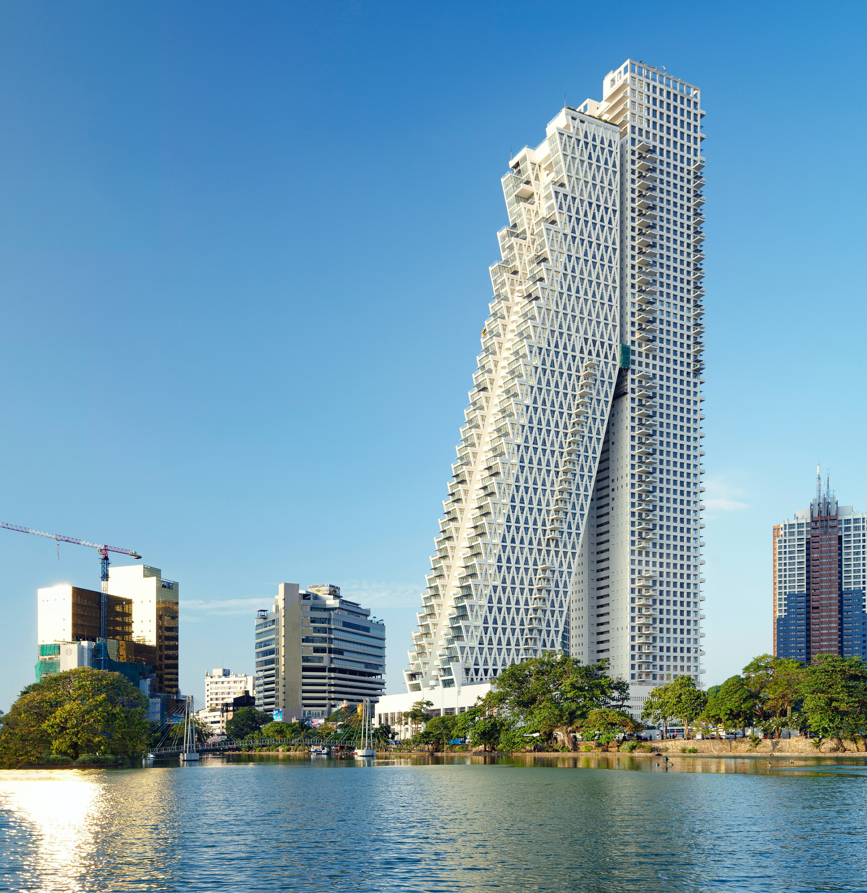
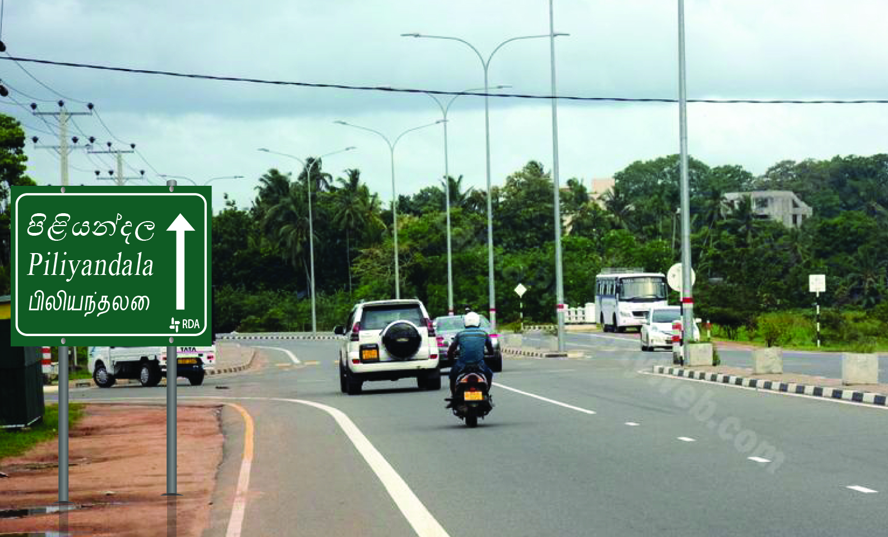
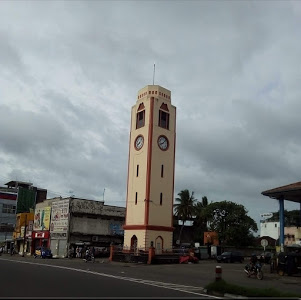
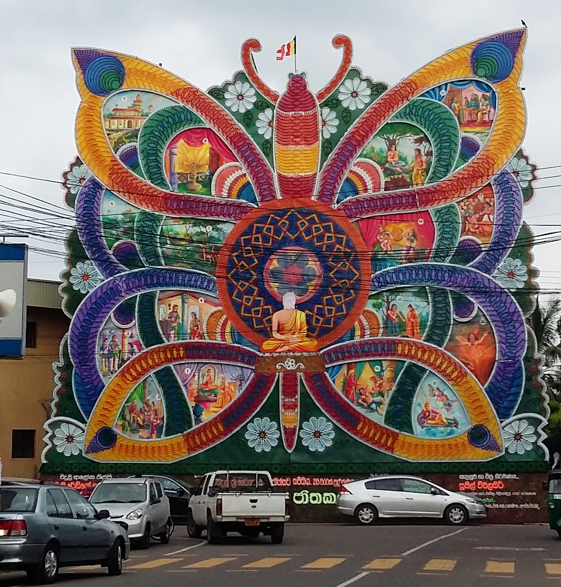
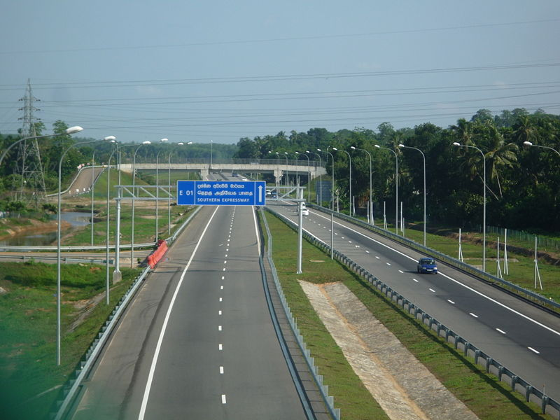

Colombo
is the commercial capital and largest city of Sri Lanka by population.
According to the Brookings Institution, Colombo metropolitan area has a population of 5.6 million,and 752,993in the city proper.
It is the financial centre of the island and a tourist destination. It is located on the west coast of the island and adjacent to the Greater Colombo area which includes Sri Jayawardenepura Kotte, the legislative capital of Sri Lanka and Dehiwala-Mount Lavinia.
Colombo is often referred to as the capital since Sri Jayawardenepura Kotte is within the urban area of, and a suburb of, Colombo. It is also the administrative capital of the Western Province and the district capital of Colombo District. Colombo is a busy and vibrant city with a mixture of modern life, colonial buildings and monuments.
Due to its large harbour and its strategic position along the East–West sea trade routes, Colombo was known to ancient traders 2,000 years ago.[citation needed] It was made the capital of the island when Sri Lanka was ceded to the British Empire in 1815, and its status as capital was retained when the nation became independent in 1948. In 1978, when administrative functions were moved to Sri Jayawardenepura Kotte, Colombo was designated as the commercial capital of Sri Lanka.

Piliyandala
It is said that prince Sapumal after capturing Yapa-Patuna (modern day Jaffna) in the 15th century AD, changed his attire in the area of Piliyandala before meeting the king in the Kotte kingdom. Thus, the name Piliyandala is derived from the words 'Pili+Andi+Dola' (පිළි+ඇඳි+දොල), meaning the stream where the king had a bath and changed clothes.
This stream is still running through Piliyandala, but its now reduced to a little stream

Piliyandala Clock Tower
The Piliyandala Clock Tower is located in the Piliyandala, Sri Lanka. The clock tower is a popular landmark of the Piliyandala.
According to local residents and documentation, this clock tower is one of the tallest on the island rising to a height of 23.8 m (78 ft) with a 4.9 m (16 ft) girth.
The clock tower in existence for more than sixty years, is considered to be of archaeological value,
thus providing the Piliyandala town with a historical background.

Piliyandala Vesak Thorana
The narration of Jātaka tales has been developed into Thoran tradition which is unique to Sri Lankan Buddhist culture.
Continuing this iconic tradition, in Vesak season of Sri Lanka,
an electrically lit pandol which is famous as Piliyandala Thorana is erected in front of the Piliyandala Central College.
In these pandols, each scene of a selected Jataka tale will be boarded with different colored lights which created attractive patterns and sequence of different lighting patterns was electronically programmed.

kahathuduwa highway entrance
Kahathuduwa is a small town in the Colombo District of the Western Province of Sri Lanka.
It is located approximately 28.3 kilometres (17.6 mi) south east of Colombo, the capital city of Sri Lanka.
( Located between Polgasowita and Gonapola towns on Colombo - Horana Road (B084))